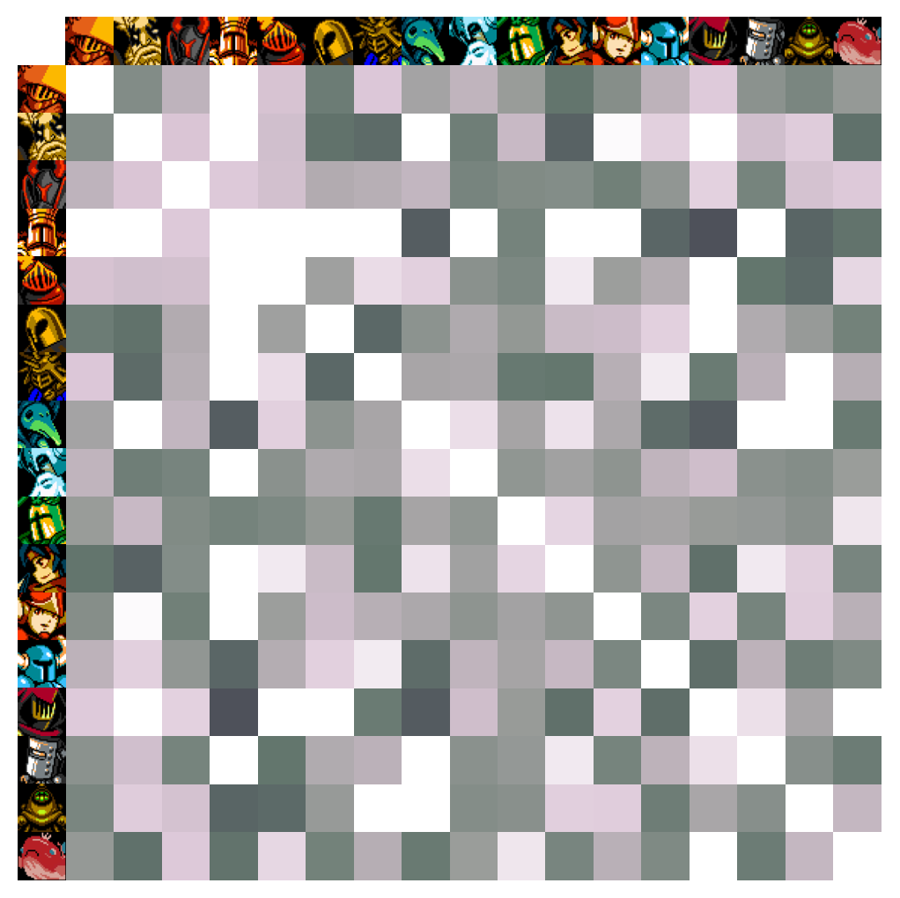

+1 (626) 321-6687
Here is a link to my resume: Current January 2019
Here is a link to my portfolio: Current January 2019
I did a poll in 2018 asking people what characters they'd like to see playable in a future installment of the game. Rather than just counting the votes directly and finding a result, I created a method to find out what types of characters people would like and ultimately come up with a list of characters that the community wants that appeals to the most people while also giving the developers some freedom to pick what characters they want. You can read about it here.
A graphic depecting how often pairs of characters were voted together (2019)
During an internship at NASA Jet Propulsion Laboratory in 2016, I designed a system to test a concept for a probe to explore inside of Jupiter's moon Europa. It uses a circular saw rotating about the vertical axis to create a borehole in ice, which on Europa would be ~20 km deep. I was an author of a paper on this system published in IEEE aerospace, available here.
This video shows the probe as it would be applied on Europa.
This video shows a test I designed for verifying that the circular saw concept for creating the borehores works (it does!).
During fall quarter of my freshman year at UCSB, I wrote a Wikipedia article for a writing class on the Optical PAyload for Lasercomm Science (OPALS) mission out of JPL/Caltech.
You can view it here.

OPALS under construction (Image credit JPL/Caltech via Wikimedia Commons)
In summer 2014, I worked at NASA Jet Propulsion Laboratory in their Robotic Vehicles and Manipulators lab. I designed fingers for the disaster recovery robot, RoboSimian. Here is a video of Principal Investigator Brett Kennedy speaking about the fingers I designed.
Here is a video of RoboSimian at the DARPA Robotics Challenge Finals, demonstrating dextrous manipulation.